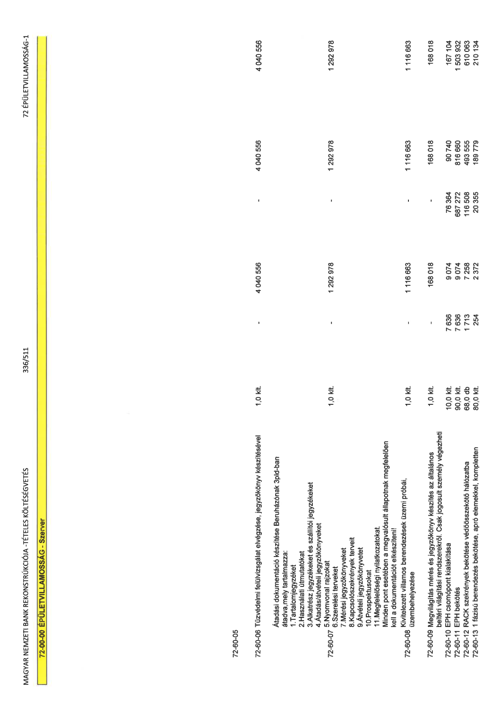

| Tétel | Menny. | Egys. | Anyag e.ár (net HUF) | Díj e.ár (net HUF) | Anyag összesen (net HUF) | Díj összesen (net HUF) | Anyag+Díj összesen (net HUF) |
|---|---|---|---|---|---|---|---|
| 72-00-00 ÉPÜLETVILLAMOSSÁG - Szerver | NaN | NaN | 0 | 0 | 2 586 804 892 | 996 575 817 | 3 583 380 709 |
| 72-60-05 | NaN | NaN | 0 | 0 | 0 | 0 | 0 |
| 72-60-06 Tűzvédelmi felülvizsgálat elvégzése, jegyzőkönyv készítésével | 1,0 | klt. | 0 | 4 040 556 | 0 | 4 040 556 | 4 040 556 |
| 72-60-07 Átadási dokumentáció készítése Beruházónak 3pld-ban átadva,mely tartalmazza: 1.Tartalomjegyzéket 2.Használati útmutatókat 3.Alkatrész jegyzékeket és szállítói jegyzékeket 4.Átadás/átvételi jegyzőkönyveket 5.Nyomvonal rajzokat 6.Szerelési terveket 7.Mérési jegyzőkönyveket 8.Kapcsolószekrények terveit 9.Átvételi jegyzőkönyvetet 10.Prospektusokat 11.Megfelelőségi nyilatkozatokat. Minden pont esetében a megvalósult állapotnak megfelelően kell a dokumentációt elkészíteni! | 1,0 | klt. | 0 | 1 292 978 | 0 | 1 292 978 | 1 292 978 |
| 72-60-08 Kivitelezett villamos berendezések üzemi próbái, üzembehelyezése | 1,0 | klt. | 0 | 1 116 663 | 0 | 1 116 663 | 1 116 663 |
| 72-60-09 Megvilágítás mérés és jegyzőkönyv készítés az általános beltéri világítási rendszerekről. Csak jogosult személy végezheti | 1,0 | klt. | 0 | 168 018 | 0 | 168 018 | 168 018 |
| 72-60-10 EPH csomópont kialakítása | 10,0 | klt. | 7 636 | 9 074 | 76 364 | 90 740 | 167 104 |
| 72-60-11 EPH bekötés | 90,0 | klt. | 7 636 | 9 074 | 687 272 | 816 660 | 1 503 932 |
| 72-60-12 RACK szekrények bekötése védőösszekötő hálózatba | 68,0 | db | 1 713 | 7 258 | 116 508 | 493 555 | 610 063 |
| 72-60-13 1 fázisú berendezés bekötése, apró elemekkel, kompletten | 80,0 | klt. | 254 | 2 372 | 20 355 | 189 779 | 210 134 |
